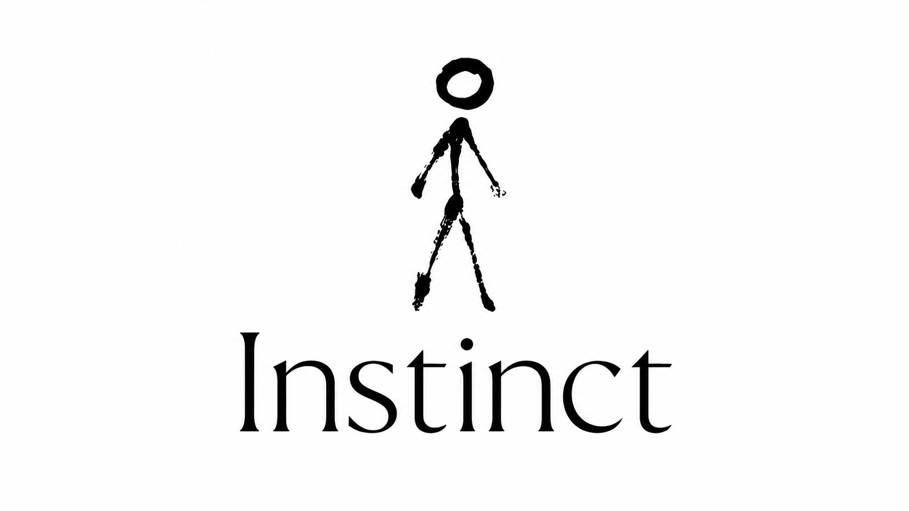

الذكاء الاصطناعي
23 نوفمبر 2026
Instinct AI: المساعد الذكي الذي ينفذ المهام نيابة عنك
تعرف على Instinct AI، المساعد الذكي الذي يحاول تنفيذ المهام اليومية مثل تنظيم المواعيد وحجز الرحلات والتسوق بدلًا منك.
اقرأ المقال ←